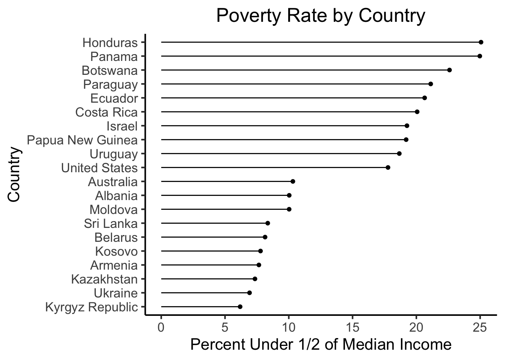

Code
source("../../_globals.r")Here I’m just sourcing an R file which is available here. It defines a custom color palette (a pastel-based colorblindness-friendly palette I try to use across all my notes and slides), as well as a custom ggplot theme (before a few additional helper functions). Students, you should feel free to take this and modify it to create your own custom palettes and/or ggplot themes!
source("../../_globals.r")GitHub user @light-and-salt has carried out some of the hard work in scraping and combining the World Bank’s full collection of data on various indicators into a smaller set of simplified, easy-to-use .csv files, so that we can jump right into visualizing them! Here we’ll open up their data on Poverty indicators, specifically.
library(tidyverse)
poverty_df <- read_csv("https://raw.githubusercontent.com/light-and-salt/World-Bank-Data-by-Indicators/master/poverty/poverty.csv")
poverty_df |> head()| Country Name | Country Code | Year | average_value_Annualized average growth rate in per capita real survey mean consumption or income, bottom 40% of population (%) | average_value_Annualized average growth rate in per capita real survey mean consumption or income, total population (%) | average_value_Gini index (World Bank estimate) | average_value_Income share held by fourth 20% | average_value_Income share held by highest 10% | average_value_Income share held by highest 20% | average_value_Income share held by lowest 10% | average_value_Income share held by lowest 20% | average_value_Income share held by second 20% | average_value_Income share held by third 20% | average_value_Multidimensional poverty headcount ratio (% of total population) | average_value_Multidimensional poverty headcount ratio, children (% of population ages 0-17) | average_value_Multidimensional poverty headcount ratio, female (% of female population) | average_value_Multidimensional poverty headcount ratio, household (% of total households) | average_value_Multidimensional poverty headcount ratio, male (% of male population) | average_value_Multidimensional poverty index (scale 0-1) | average_value_Multidimensional poverty index, children (population ages 0-17) (scale 0-1) | average_value_Multidimensional poverty intensity (average share of deprivations experienced by the poor) | average_value_Population living in slums (% of urban population) | average_value_Poverty gap at $1.90 a day (2011 PPP) (%) | average_value_Poverty gap at $3.20 a day (2011 PPP) (%) | average_value_Poverty gap at $5.50 a day (2011 PPP) (%) | average_value_Poverty headcount ratio at $1.90 a day (2011 PPP) (% of population) | average_value_Poverty headcount ratio at $3.20 a day (2011 PPP) (% of population) | average_value_Poverty headcount ratio at $5.50 a day (2011 PPP) (% of population) | average_value_Poverty headcount ratio at national poverty lines (% of population) | average_value_Proportion of people living below 50 percent of median income (%) | average_value_Survey mean consumption or income per capita, bottom 40% of population (2011 PPP $ per day) | average_value_Survey mean consumption or income per capita, total population (2011 PPP $ per day) |
|---|---|---|---|---|---|---|---|---|---|---|---|---|---|---|---|---|---|---|---|---|---|---|---|---|---|---|---|---|---|---|---|
| Central African Republic | CAF | 1992 | NA | NA | 61.3 | 18.5 | 47.7 | 65.0 | 0.7 | 2.0 | 4.9 | 9.6 | NA | NA | NA | NA | NA | NA | NA | NA | NA | 58.6 | 70.9 | 81.0 | 84.1 | 92.2 | 96.7 | NA | 29.1 | NA | NA |
| China | CHN | 2014 | NA | NA | 39.2 | 22.3 | 29.7 | 45.8 | 2.5 | 6.2 | 10.5 | 15.2 | NA | NA | NA | NA | NA | NA | NA | NA | 25.2 | 0.3 | 2.1 | 9.7 | 1.4 | 9.5 | 31.5 | 7.2 | NA | NA | NA |
| Fiji | FJI | 2008 | NA | NA | 40.4 | 20.5 | 32.9 | 47.8 | 2.7 | 6.6 | 10.8 | 14.4 | NA | NA | NA | NA | NA | NA | NA | NA | NA | 0.2 | 2.3 | 11.1 | 1.6 | 10.9 | 37.3 | 35.2 | 11.7 | NA | NA |
| Gambia, The | GMB | 2003 | NA | NA | 47.3 | 20.7 | 36.8 | 52.8 | 1.8 | 4.8 | 8.7 | 13.0 | NA | NA | NA | NA | NA | NA | NA | NA | NA | 17.9 | 34.7 | 53.8 | 46.1 | 69.8 | 87.3 | NA | 17.4 | NA | NA |
| Haiti | HTI | 2010 | NA | NA | NA | NA | NA | NA | NA | NA | NA | NA | NA | NA | NA | NA | NA | NA | NA | NA | 70.1 | NA | NA | NA | NA | NA | NA | NA | NA | NA | NA |
| India | IND | 2005 | NA | NA | NA | NA | NA | NA | NA | NA | NA | NA | NA | NA | NA | NA | NA | NA | NA | NA | 34.8 | NA | NA | NA | NA | NA | NA | NA | NA | NA | NA |
So, although the rows don’t seem to be in any particular order, we can see to our relief that this data is tidy:
We can look at the column headers to see how we can start visualizing the properties we have: aside from the id variables Country Name, Country Code, and Year, all of the columns have the form average_value_<variable description>, where <variable description> is the short description given for each variable within the original World Bank data.
Although these variables represent a wide range of different ways to measure poverty (for example, it’s difficult to choose a priori between $5.50, $3.20, and $1.90 as the “correct” threshold for poverty), the one that seems to require a relatively low amount of context is:
average_value_Proportion of people living below 50 percent of median income (%)
So, let’s use the rename() function from tidyverse to make this long name a bit more manageable, then the select() function to extract just this variable (alongside the id variables):
median_df <- poverty_df |> rename(
below_half_median = `average_value_Proportion of people living below 50 percent of median income (%)`,
country = `Country Name`
) |> select(country, `Year`, below_half_median)
median_df |> head()| country | Year | below_half_median |
|---|---|---|
| Central African Republic | 1992 | 29.1 |
| China | 2014 | NA |
| Fiji | 2008 | 11.7 |
| Gambia, The | 2003 | 17.4 |
| Haiti | 2010 | NA |
| India | 2005 | NA |
Next, as one additional simplifying step, let’s convert this country x year (panel) dataset into just a country (cross-sectional) dataset, by computing the mean value for a given country’s measures across all of the years in which the country measure is available. I’ll also make a column indicating how many years were used to compute this mean, so that we can drop countries with too few years, if we’d like:
summ_df <- median_df |> group_by(country) |>
summarize(
below_half_med_avg = mean(below_half_median),
year_count = n()
) |> drop_na()
summ_df |> head()| country | below_half_med_avg | year_count |
|---|---|---|
| Albania | 10.033333 | 9 |
| Algeria | 11.466667 | 3 |
| Armenia | 7.655000 | 20 |
| Australia | 10.320000 | 10 |
| Belarus | 8.140909 | 22 |
| Botswana | 22.600000 | 5 |
Since it may be unwieldy to plot all ~200 countries in the world, let’s make our visualizations a bit more digestible by focusing in on just the 10 countries with the highest poverty levels and the 10 with the lowest poverty levels. We’ll start by extracting the 10 countries with the highest levels (adding a column named category to keep track of the fact that we’ve extracted these countries as having the highest poverty rates, for later when we’ll plot the highest and lowest together):
highest_df <- summ_df |>
arrange(desc(below_half_med_avg)) |>
head(10) |>
mutate(Category = "10 Highest")
highest_df |> arrange(below_half_med_avg)| country | below_half_med_avg | year_count | Category |
|---|---|---|---|
| United States | 17.77742 | 31 | 10 Highest |
| Uruguay | 18.66400 | 25 | 10 Highest |
| Papua New Guinea | 19.20000 | 2 | 10 Highest |
| Israel | 19.26364 | 11 | 10 Highest |
| Costa Rica | 20.06364 | 33 | 10 Highest |
| Ecuador | 20.65000 | 20 | 10 Highest |
| Paraguay | 21.12609 | 23 | 10 Highest |
| Botswana | 22.60000 | 5 | 10 Highest |
| Panama | 24.97407 | 27 | 10 Highest |
| Honduras | 25.07000 | 30 | 10 Highest |
And now, finally, we have our first visualization choice: what is a reasonable way to visualize these data points, and why should we pick this way over alternative ways to visualize it? I would argue, first, that since the country variable is categorical and non-ordinal, but the below_half_med_avg variable is continuous, we should represent this using some sort of bar-chart-esque method.
Here I just want to point out: when we use bar charts, one tricky consideration is the fact that these types of charts implicitly draw one’s attention to the zero point (the “bottom” of the bar), since the lines are proportional to the distance of each number from zero. Later on we’ll address this explicitly by plotting relative to the global mean instead of zero, but for now I will just draw your attention to this factor and use a “lollipop” plot instead of a bar chart, to draw the viewer’s attention to the points themeslves and de-emphasize the bars (by narrowing them down to the size of lines):
# I'm also defining string variables that we can use
# as titles/labels for the remainder of the analysis
title <- "Poverty Rate by Country"
cat_label <- "Country"
rate_label <- "Percent Under 1/2 of Median Income"
highest_df |>
mutate(country = fct_reorder(country, below_half_med_avg)) |>
ggplot(aes(y=below_half_med_avg, x=country)) +
geom_point() +
geom_segment(aes(xend=country, yend=0)) +
coord_flip() +
#theme_classic() +
theme_jjdsan() +
labs(title=title, y=rate_label, x=cat_label)Now let’s repeat these steps, but for the 10 countries with the lowest poverty rates:
lowest_df <- summ_df |>
arrange(below_half_med_avg) |>
head(10) |>
mutate(Category = "10 Lowest")
lowest_df| country | below_half_med_avg | year_count | Category |
|---|---|---|---|
| Kyrgyz Republic | 6.185000 | 20 | 10 Lowest |
| Ukraine | 6.922727 | 22 | 10 Lowest |
| Kazakhstan | 7.347368 | 19 | 10 Lowest |
| Armenia | 7.655000 | 20 | 10 Lowest |
| Kosovo | 7.783333 | 12 | 10 Lowest |
| Belarus | 8.140909 | 22 | 10 Lowest |
| Sri Lanka | 8.350000 | 8 | 10 Lowest |
| Moldova | 10.027273 | 22 | 10 Lowest |
| Albania | 10.033333 | 9 | 10 Lowest |
| Australia | 10.320000 | 10 | 10 Lowest |
lowest_df |>
mutate(country = fct_reorder(country, below_half_med_avg)) |>
ggplot(aes(y=below_half_med_avg, x=country)) +
geom_point() +
geom_segment(aes(xend=country, yend=0)) +
coord_flip() +
#theme_classic() +
theme_jjdsan() +
labs(title=title, y=rate_label, x=cat_label)Notice how, if we just eyeball these two plots without paying close attention, they don’t look very different. In fact, the hurried viewer may just look at the “curve” formed by the ends of the lines, conclude that they convey the same information, and move on. This happens, in large part, because the x-axis scales of the two plots are different, despite the fact that they are measuring the exact same variable. To ensure that it’s clear to the viewer that these two plots are displaying values of the same variable (poverty rate) on their x-axes, let’s plot the top 10 and bottom 10 together in the same figure:
high_low_df <- bind_rows(highest_df, lowest_df)
high_low_df |>
mutate(country = fct_reorder(country, below_half_med_avg)) |>
ggplot(aes(y=below_half_med_avg, x=country)) +
geom_point() +
geom_segment(aes(xend=country, yend=0)) +
coord_flip() +
#theme_classic() +
theme_jjdsan() +
labs(title=title, y=rate_label, x=cat_label)
In the figure we just generated, we already have a fairly extreme example of the dangers that can come from presenting charts without proper context: since the audience doesn’t know that we’ve extracted only the top 10 and bottom 10 countries, they may reasonably look at the figure and infer (for example) that perhaps there is a large drop between the 10th-ranked and 11th-ranked countries in terms of poverty rate, for some reason.
As a potential “quick fix”, and to show how we can keep changing what the data “says” even in this simple example, let’s plot the 10 countries with the highest poverty rate (on this measure) in a shade of red, and the 10 countries with the lowest rates in a shade of green, and plot all 20 relative to the median rate across all countries and years:
high_low_df |>
mutate(country = fct_reorder(country, below_half_med_avg)) |>
ggplot(aes(y=below_half_med_avg, x=country, color=Category)) +
geom_point() +
geom_segment(aes(xend=country, yend=0)) +
coord_flip() +
#theme_classic() +
theme_jjdsan() +
labs(title=title, y=rate_label, x=cat_label)Now, I still find this presentation fairly misleading in many ways, but especially in the sense that it makes the value of zero seem more relevant than it actually is. These countries, for example, were not selected on the basis of their difference from zero as such, but instead on the basis of how extreme they are relative to the average of all the countries. So, for plotting each country’s poverty rate relative to this global mean, we can compute and save a global_mean variable from summ_df:
(global_mean <- mean(summ_df$below_half_med_avg))[1] 13.97053And now we can generate a new plot, where this comparison with the mean country (rather than the more arbitrary/unjustified comparison with the zero point) is made explicit via a dashed vertical line:
high_low_df |>
mutate(country = fct_reorder(country, below_half_med_avg)) |>
ggplot(aes(y=below_half_med_avg, x=country, color=Category)) +
geom_point() +
geom_segment(aes(xend=country, yend=global_mean)) +
geom_hline(yintercept=global_mean, linetype="dashed") +
coord_flip() +
#theme_classic() +
theme_jjdsan() +
labs(title=title, y=rate_label, x=cat_label)There is a lot more we can do with this dataset! So you can keep it in mind as we discuss more and learn more advanced visualization techniques. For now, and for inspiration/examples, you can check out Nathan Yau’s blog post One Dataset, Visualized 25 Ways, which is what I had in the back of my mind when making this demo!